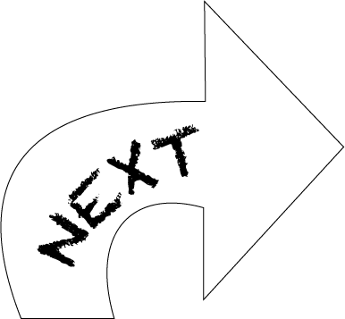

introduction to coding
creative ideation
coding basic level javascript
Creative coding was a project I worked on in my first year of university, which introduced me to the world of coding expecially in the creative field. For this project, I was required to design visual designs purely using code. I used draw functions to create patterns and lines then used javascript to effect the movement of the patterns over a period of time to create the end product.
Through out this project, exploration was the key. I had the opportunity play around and experiment with different functions using javascript to gather an idea of how everything worked. I had a lot of fun playing around creating different patterns and designs without any process of physically drawing.
This project gave me the ability to express myself creatively through an entirely new mean of designing. I learnt how to create creative features using javascript which can be used for online publications and websites in the future. This also allowed me to design digital artwork which was dynamic rather than just simply static drawings. These skills can be used to create work which is more interesting and interactive with users.
